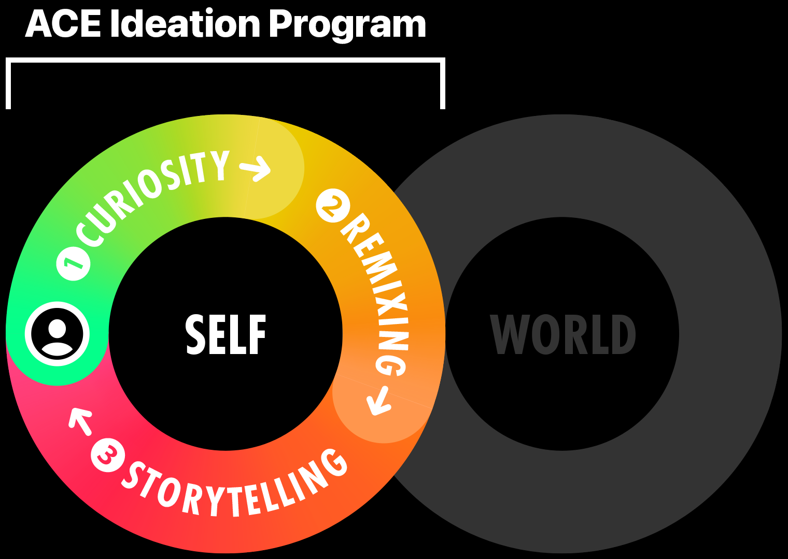
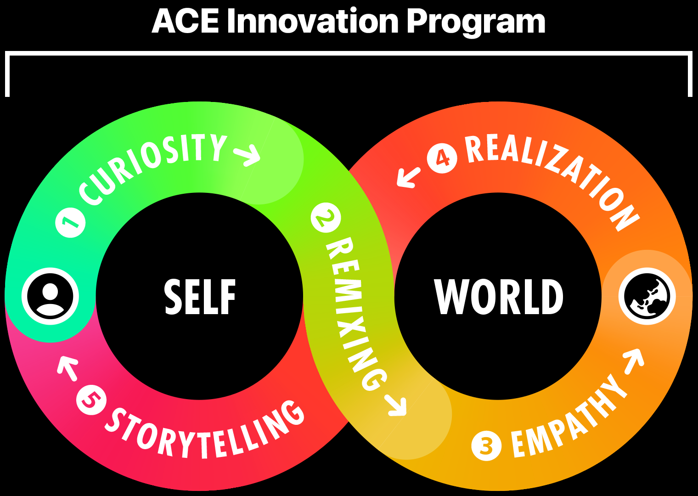

As tech giants push AI to surpass humans in both routine and reasoning tasks, the job market is shifting faster than the education system can respond, creating a growing gap that leaves students struggling to meet real-world demands.
Applied Creativity Engine (ACE) is a structured, human-led, AI-supported learning cycle that cultivates creativity, critical thinking, and self-direction through authentic project-based learning. Once the engine is embedded and ignited, learners are empowered to address complex, real-world challenges in an ever-changing global environment.
We believe humans don’t lose when AI becomes smarter; we lose when we start outsourcing our thinking to it.
ACE embeds a creative engine inside your mind in just 30 hours of training, fueling your imagination, sharpening your critical thinking, and empowering you to take control of your own learning journey for life.
Unlike traditional courses focused on memorizing tools or mastering prompts, ACE helps you learn how to co-create with AI. It turns technology into your amplifier, not your replacement.

In the first 15 hours, the ACE Ideation Program reignites your creative muscle, guiding you to rediscover the joy of original thinking. Then, in the next 15 hours, the ACE Innovation Program channels that energy into solving real-world challenges using proven methods practiced by leading companies worldwide.

Together, these two programs form a complete cycle of Applied Creativity, because creativity alone isn’t enough until it’s applied. ACE offers a future-ready way of self-learning that grows with you. After all, the future doesn’t belong to those who simply follow instructions. It belongs to those who ignite their own engines and dare to think beyond AI.